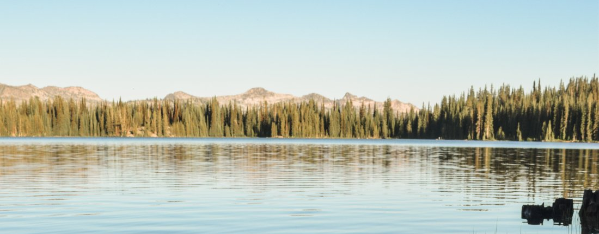

Weather Summary
Currently:
Current Temperature: °F
Wind Chill:
Humidity:
Wind Speed: mph
Upcoming Events
Things to do in Fish Haven
Bear Lake, a freshwater lake situated on the Idaho-Utah border, is a popular go-to place for the people of Fish Haven. You may bring your own boat or jet ski, or there are rentals right there at the lake. Fishing is another favorite activity around the lake. Or if that's not your style, lounge on the many beaches located all over the area with a view of the gorgeous turquoise waters. Bear Lake State Park offers many outdoor activities and is a great place to bring the family for a camping trip.